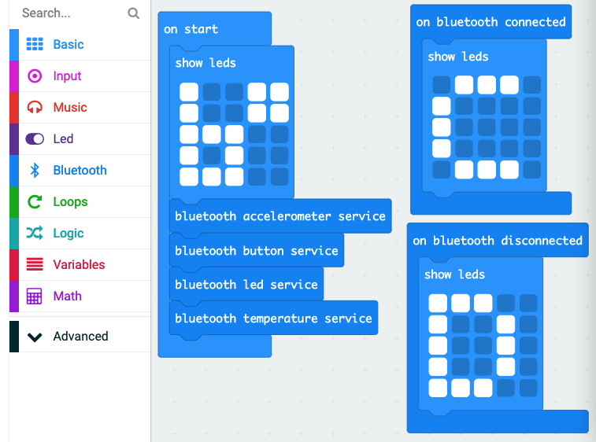
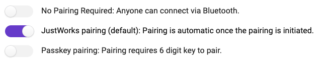

Overview
This is an introduction on how you can exchange information between a micro:bit and a Raspberry Pi using Bluetooth Low Engergy (BLE).


This is an introduction on how you can exchange information between a micro:bit and a Raspberry Pi using Bluetooth Low Engergy (BLE).
We will use https://makecode.microbit.org to create our own hex file with the required Bluetooth services for this workshop.

If there are not the Bluetooth commands on the left hand side then click on the cog and choose Extentions. From the list of Extensions, choose Bluetooth and accept that radio will be replaced with Bluetooth.
Before saving the program to the micro:bit, click on the cog and select Project Settings. Choose the JustWorks pairing mode.

The micro:bit with this hex file will need to paired with the Raspberry Pi, more on that later. For now we are done with the micro:bit and can switch to setting up the Raspberry Pi.
You will need to install the Bluezero package from Python Package Index (PyPI).
These instructions are targeted at a Raspberry Pi running a Raspbian Stretch release:
sudo pip3 install bluezero
If this is the first time this combination of Raspberry Pi and micro:bit have been used together then you will need to ensure the micro:bit is in the list of known Bluetooth devices that are paired with the Raspberry Pi. The pairing will be done using bluetoothctl.
Note: There is ‘tab’ command completion on commands and addresses available within the bluetoothctl tool.
Note: As Bluetooth addresses are unique, this workshop will representation the Raspberry Pi and micro:bit addresses as xx:xx:xx:xx:xx:xx and yy:yy:yy:yy:yy:yy respectively. Please replace these with the actual address of your devices
The command line tool “bluetoothctl” to discover the micro:bit.
On the terminal command line type:
$ bluetoothctl
The new prompt will be:
[bluetooth]#
Type help to get a full list of the commands.
Check that the Bluetooth is switched on on the Raspberry Pi
Type show and check that you have Powered: yes.
For example:
Controller xx:xx:xx:xx:xx:xx
Name: raspberrypi
Alias: raspberrypi
Class: 0x000000
Powered: yes
Discoverable: no
Pairable: yes
UUID: Generic Attribute Profile (00001801-0000-1000-8000-00805f9b34fb)
UUID: A/V Remote Control (0000110e-0000-1000-8000-00805f9b34fb)
UUID: PnP Information (00001200-0000-1000-8000-00805f9b34fb)
UUID: Generic Access Profile (00001800-0000-1000-8000-00805f9b34fb)
UUID: A/V Remote Control Target (0000110c-0000-1000-8000-00805f9b34fb)
Modalias: usb:v1D6Bp0246d052E
Discovering: no
If "Powered" is not set to "yes" then type power on
Make a note of the controller address as you will need it later
You will need to get bluetoothctl to search for micro:bits that are nearby.
When you see your micro:bit you can stop the search.
[bluetooth]# scan on Discovery started [CHG] Controller xx:xx:xx:xx:xx:xx Discovering: yes [NEW] Device yy:yy:yy:yy:yy:yy BBC micro:bit [?????] [bluetooth]# scan off
Using the Bluetooth address of the micro:bit (found with the above command) to connect to it.
Because pairing is required with this hex file the micro:bit needs to be put into pairing mode.
To do this, hold button A & B and then press and release the reset button on the back of the micro:bit.
Once the Bluetooth logo is displayed on the micro:bit you can release all the buttons.
[bluetooth]# pair yy:yy:yy:yy:yy:yy
Attempting to pair with yy:yy:yy:yy:yy:yy
[CHG] Device yy:yy:yy:yy:yy:yy Connected: yes
[CHG] Device yy:yy:yy:yy:yy:yy Connected: no
[CHG] Device yy:yy:yy:yy:yy:yy Paired: yes
Pairing successful
If you want to check the micro:bit has been added to the devices list then type devices
You have finished with bluetoothctl so type exit
This first Python exercise is to send text to display on the micro:bit.
from bluezero import microbit
ubit = microbit.Microbit(adapter_addr='xx:xx:xx:xx:xx:xx',
device_addr='yy:yy:yy:yy:yy:yy',
accelerometer_service=True,
button_service=True,
led_service=True,
magnetometer_service=False,
pin_service=False,
temperature_service=True)
my_text = 'Hello, world'
ubit.connect()
while my_text is not '':
ubit.text = my_text
my_text = input('Enter message: ')
ubit.disconnect()
Display an image of which button needs pressing to break out of the loop
import time
from bluezero import microbit
ubit = microbit.Microbit(adapter_addr='xx:xx:xx:xx:xx:xx',
device_addr='yy:yy:yy:yy:yy:yy',
accelerometer_service=True,
button_service=True,
led_service=True,
magnetometer_service=False,
pin_service=False,
temperature_service=True)
ubit.connect()
while ubit.button_a < 1:
ubit.pixels = [0b00000, 0b01000, 0b11111, 0b01000, 0b00000]
time.sleep(0.5)
ubit.clear_display()
while ubit.button_b < 1:
ubit.pixels = [0b00000, 0b00010, 0b11111, 0b00010, 0b00000]
time.sleep(0.5)
ubit.clear_display()
ubit.disconnect()
This last exercise uses information from the micro:bit sensors to be displayed ont he Raspberry Pi.
import time
from bluezero import microbit
ubit = microbit.Microbit(adapter_addr='xx:xx:xx:xx:xx:xx',
device_addr='yy:yy:yy:yy:yy:yy',
accelerometer_service=True,
button_service=True,
led_service=True,
magnetometer_service=False,
pin_service=False,
temperature_service=True)
looping = True
ubit.connect()
print('Connected... Press a button to select mode')
mode = 0
while looping:
if ubit.button_a > 0 and ubit.button_b > 0:
mode = 3
ubit.pixels = [0b10001, 0b01010, 0b00100, 0b01010, 0b10001]
time.sleep(1)
elif ubit.button_b > 0:
mode = 2
ubit.pixels = [0b11111, 0b00100, 0b00100, 0b00100, 0b00100]
time.sleep(0.25)
elif ubit.button_a > 0:
mode = 1
ubit.pixels = [0b11110, 0b10000, 0b11100, 0b10000, 0b10000]
time.sleep(0.25)
if mode == 1:
x, y, z = ubit.accelerometer
if z < 0:
print('Face up')
else:
print('Face down')
time.sleep(0.5)
elif mode == 2:
print('Temperature:', ubit.temperature)
time.sleep(0.5)
elif mode == 3:
looping = False
print('Exiting')
ubit.disconnect()